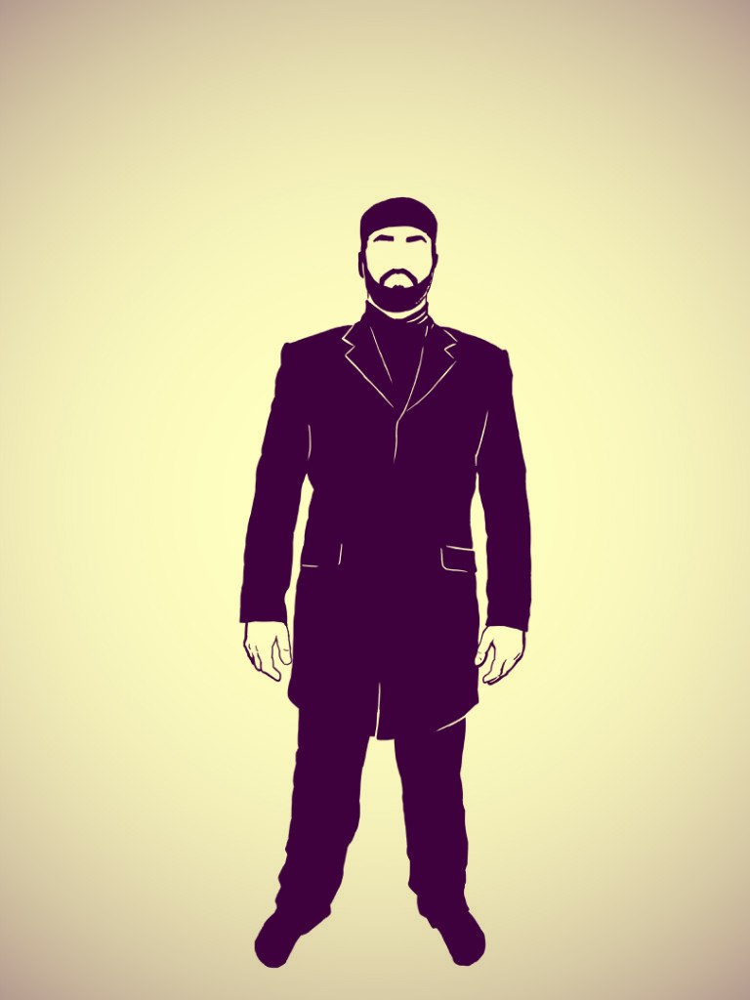
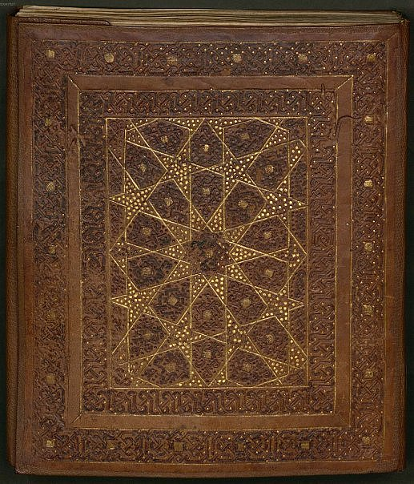
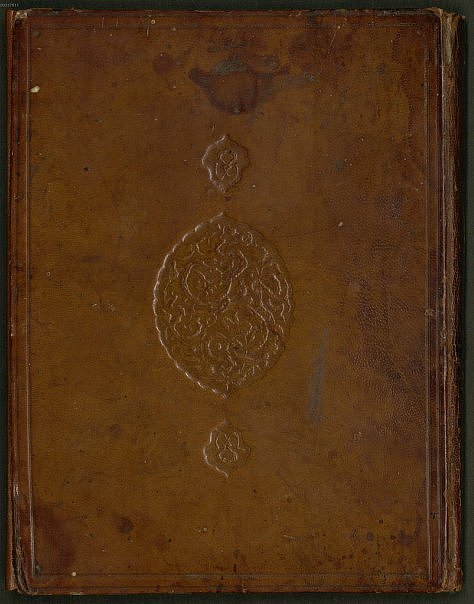

Салят (комикс)
Демонстрация совершения салята согласно маликитскому мазхабу.

Мусхаф: Магрибский куфи
Коранический шрифт средневекового Марокко.

Мусхаф: Андалузский куфи
Классический шрифт Корана в мусульманской Андалусии.
Шейх Салек ибн Сиддина
Большой алим маликитов Мавритании, да смилуется над ним Аллах.
Шейх Абд Аллах ибн Байя
Один из самых известных и уважаемых алимов среди современных ученых, да хранит его Аллах.
Шейх Ахмад Таха Райян
Большой алим маликитов Египта, да смилуется над ним Аллах.
Шейх Али Лараки
Один из самых авторитетных современных маликитских ученых на Западе, да хранит его Аллах.
Шейх Фарид аль-Баджи
Большой факих и мухаддис из Туниса, да хранит его Аллах.
Шейх Хамза Юсуф
Маликитский алим и просветитель из США, да хранит его Аллах.

Шейх Абд Аллах ибн Хамид Али
Маликитский алим и просветитель из США, да хранит его Аллах.

Шейх Абд Аллах Альсапарро аль-Фаранси
Маликитский шейх и проповедник из Франции, выпускник мавританского медресе «Ан-Набагийя», да хранит его Аллах.

Шейх Рами Нсур
Маликитский алим и просветитель из США, специалист по даавату в тюрьмах, да хранит его Аллах.

Шейх Иссам ас-Сабуи
Маликитский алим из Туниса, выпускник университета «Фатх», да хранит его Аллах.
Шейх Шади Эльмасри
Маликитский алим и просветитель из США, да хранит его Аллах.